-
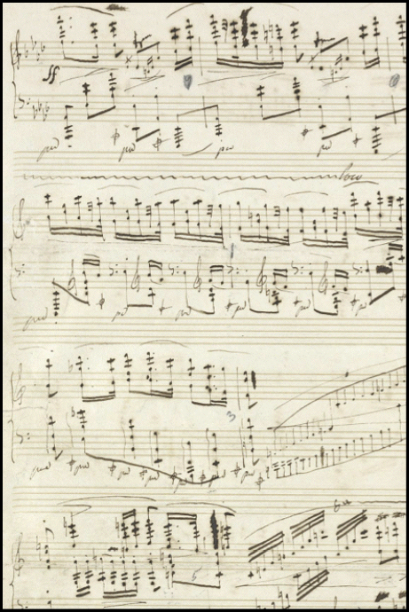
Chapter 8
Adding to
the TriadThe major and minor triads are
consonant and stable; they seem to be
at rest. The diminished and augmented triads are dissonant and therefore restless; they imply movement toward a resolution of the dissonance. Dissonant notes added to the harmony provide an element of instability that can propel the music forward.
From the autograph manuscript of Frédéric Chopin’s,
Polonaise in A flat major, op. 53 (c. 1842)
Chopin’s music is a rich source of complex harmonies. -
111
Section 1
Seventh Chords
A common dissonance is the interval of a seventh formed with a chord’s root. This seventh can be seen as an extension of the basic structure of the triad – it’s another third added above the two that form the triad. The four notes together make a seventh chord Seventh Chord The chord formed by adding another third above a triad which forms the interval of a seventh with the chord’s root. Adding sevenths of different types to the basic triads, major, minor, and diminished, produces a variety of seventh chords, of which five are commonly used:
The most common type of seventh chord is the dominant seventh chord (sometimes called the major-minor seventh).
Because the interval of a seventh is dissonant, all types of seventh chords are unstable and are used in tonal music to give a sense of motion. .The Dominant Seventh Chord
The seventh that appears most often in tonal harmony is a minor seventh added to the dominant triad; the triad built on the dominant scale degree. This sonority can be seen as a major triad with a minor third on top, and
so it is sometimes called the major-minor seventh chord. Because of its dominant function it is more often called the dominant seventh chord Dominant Seventh Chord The chord formed by adding a minor seventh to a dominant triad. The resulting chord is also known as the major-minor seventh since it consists of a major triad with a minor third above it. .
In the major scale, it occurs naturally (i.e., without using accidentals) only
on the dominant degree.Movie 8.1 Adding a third above a triad makes a seventh chord
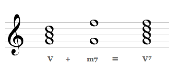Figure 8.1 Building a dominant seventh chord
-
112
Building The Dominant Seventh In Different Keys
The dominant seventh chord is natural to all major keys. That means all four notes of the dominant seventh chord are unaltered scale notes as defined by the key signature of a major scale. Build a triad on the dominant degree of a major scale, add to it a minor seventh (which will be the subdominant degree) and you’ll have a dominant seventh chord, a major triad combined with a minor seventh.
As we saw earlier, in minor keys the dominant chord requires an accidental to raise its third, producing a major triad with a leading tone to the tonic. Even in this case, once the chord is made major you can add a third without an accidental to make the dominant seventh chord.
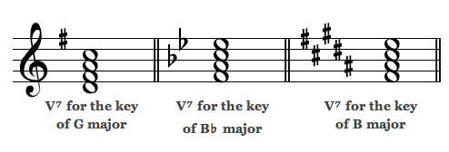Figure 8.2 Writing dominant sevenths in different keys
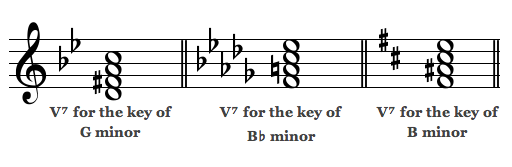Figure 8.3 Writing dominant sevenths in minor keys
-
113
Inversion Of Seventh Chords
Adding a seventh to the triad allows one more inversion. If the seventh itself is in the bass position, the chord is in third inversion Third Inversion A seventh chord voiced so that the seventh is the bass note. In figured bass, the figure 4/2 is added beneath the bass note to indicate that the root of the chord is a second above the
bass note. .Movie 8.2 Inversions of the seventh chord
Figure 8.4 Figured bass for seventh chords
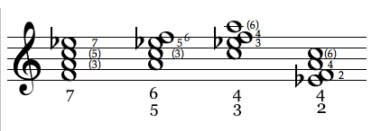As with triads, these figures refer to intervals formed between the bass and the upper notes.
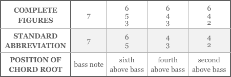Figure 8.5 Figured bass symbols for seventh chords
As with triads, numbers derived from figured bass serve as abbreviations for the various inversions of seventh chords:
“7” is the root position seventh chord; “6/5” means a first inversion seventh chord; “4/3” means the second inversion, and “4/2” means a third inversion.These figures ignore octaves and doubling: a “6,” for example, can refer to a sixth plus an octave. In Figure 8.4, the parentheses refer to intervals that are assumed but are not part of standard figured bass notation.
-
114
Notating A Second Within A Chord
As seventh chords will often include the interval of a second,
you may want to know how to notate a second. Assuming that the notes of the second have the same stem direction, the upper note head should be written to the right of the lower one, both sharing a stem that runs between them. That stem aligns with the stem of the other chord notes. If there are any accidentals on notes of the second, they should be moved to the left so that they don’t interfere with each other.Identifying Chords Quickly
It’s a useful skill to be able to quickly identify the root and quality of a chord. This ability can enable you to recognize harmonies and create an accompaniment. But the roots have gotten a little harder to recognize now that we have brought in seventh chords and inversions and doublings. Here’s a quick way to tell the root of any triadic chord (not counting certain jazz chords): look for seconds, sevenths, perfect fourths and fifths.
• A chord containing an interval of a seventh or its inversion,
a second, is a seventh chord. To identify the chord’s root look for the upper note of a second or the lower note of a seventh (Figure 8.7 top).• If you can see no seconds or sevenths (remember they may appear as compound intervals) then the chord must be a triad with perhaps some doubled notes. In that case the root will be the upper note of any perfect fourth you can find, or the lower note of any perfect fifth (Figure 8.7 bottom).
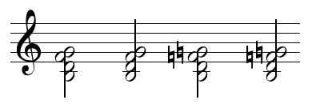Figure 8.6 Positioning note heads for seconds
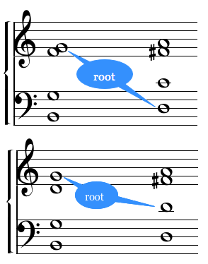Figure 8.7 Look for seconds, sevenths, fourths or fifths to quickly find a chord’s root
-
115
Other Types Of Seventh Chords
Adding sevenths of different types to the basic triads, major, minor, and diminished, produces a variety of seventh chords, of which five are commonly used.
• Dominant seventh: The best known of the seventh chords is the dominant seventh discussed in the previous pages, formed by adding a minor seventh to a major triad. That’s why it’s also called the “major-minor seventh.”
• Minor seventh: A minor seventh added to a minor triad produces the minor seventh chord, which in a major key appears naturally when an unaltered seventh is added to the ii, iii, or vi chords. In minor keys it’s natural to the i, iv, and v chords, though the v in minor will usually be altered to a V.
• Major seventh: Somewhat less common, at least in classical music, is the major seventh chord, which results when you add a major seventh to a major triad. The major seventh chord is natural to the I and IV chords in major keys, and to III and VI in minor keys.
Movie 8.3 Constructing seventh chords
-
116
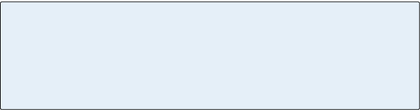 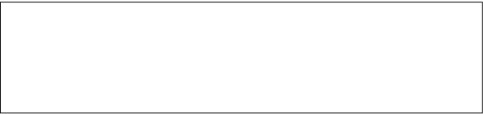• Half-diminished seventh: If a minor seventh is added to a diminished triad the result is the half-diminished seventh chord, called that because the fifth is diminished but the seventh is not (the half-dim 7 is also known as the “7 flat 5”). In a major key this sonority is natural only to the single diminished chord, the vii°. In a minor key it would occur in the ii°. The symbol, ø, can be used to label a half-diminished
7th, as in “viiø⁷.”• Diminished seventh: If that seventh added to the diminished triad is lowered one half step the result is a diminished seventh chord, which is made entirely of minor thirds, with the outer notes separated by a diminished seventh. This seventh chord is not natural to any degree of either the major or minor scale: to form it you must add at least one accidental. The fully-diminished seventh is labeled with “°”, as in “vii°⁷.”
Suggested Practica Musica Activities 8.1
• Building Seventh Chords: Correctly spell seventh chords in root position.
• Recognizing Seventh Chords: Identify various types of seventh chords, using
both sight and sound.
-
117
Resolving Chordal Dissonance
In traditional tonal music a dissonant interval resolves to a consonance. This is also true of the dissonant intervals in seventh chords, where the conventions of dissonance resolution Resolution The move from dissonance to consonance. A dissonant interval or chord generally resolves to a consonant one in classical tonal music, dissipating what is meant to be perceived as the tension of the dissonance. Dissonance produces a feeling of instability, whereas consonance creates a feeling of stability or being at rest. have interesting consequences.
By adding a seventh to the dominant triad we have actually introduced two dissonances: the seventh between the outer
notes and a diminished fifth between the seventh and the third (Movie 8.4). It doesn’t matter whether any of the intervals are inverted – the dissonance remains (Movie 8.5). What is interesting is that the conventional resolutions of these dissonances tend to strengthen the dominant-tonic relationship:• The upper note of a seventh usually moves downward by a step.
• A second often expands to form a third, usually by moving its lower note downward.
• A diminished interval will often contract to the nearest consonance.
• An augmented interval will often expand to the nearest consonance.
Movie 8.4 Intervals contained within the dominant seventh chord contain two dissonances
Movie 8.5 Dissonances in the inversion of the dominant seventh chord
-
118
Movie 8.6 shows some typical resolutions of dissonant intervals.
Suppose we apply these conventional resolutions to the dissonances within the dominant seventh chord for C major (Movie 8.7).
If the seventh, which is F, moves down a step for the following chord, it will be on E. If the augmented fourth, B-F, resolves by expanding to the nearest consonance it will become a sixth, E-C. What consonant triads in the key of C major would include
C and E? Only the C major triad itself (I) or the A minor triad (vi).So we see that adding a dissonant seventh to the dominant triad, V,
can create an even stronger pull toward the I or vi chords for that key.
We already knew that there is a very strong relationship between the
tonic and dominant degrees of the scale, and now we have a way to
alter the triad built on the dominant degree so that it will reinforce
that relationship. The dominant seventh chord will suggest to the ear
that the next chord is going to be a tonic (or a vi, which can substitute
for the tonic). The dominant seventh is a powerful means of telling
the listener that a resolution to the tonic is about to happen, which
is why it’s unsettling if used as a final chord.Movie 8.6 Typical resolutions of dissonant intervals
Movie 8.7 Resolving the dominant seventh chord
-
119
Review 8.1
1. Seventh chords are triads with another third
added to the stack. Because the interval of a seventh is dissonant, all types of seventh chords are unstable and are used in tonal music to give a sense of motion.2. The seventh that appears most often in tonal harmony is the seventh added to the dominant triad. The resulting chord is known as the dominant seventh chord or the major-minor seventh since it consists of a major triad with a minor third above it.
3. Seventh chords have one more possible inversion:
if the seventh itself is in the bass, the chord is in
third inversion. Inversions of seventh chords are represented in analysis by these figures:
root position: 7; first inversion: 6/5;
second inversion: 4/3; third inversion: 4/2.4. To quickly identify the root of an unknown chord
in traditional tonal music, look first for any seconds or sevenths. If you see either one (they may be compound) the chord is a seventh chord and its
root is the upper note of the second or the lower
note of the seventh.5. If there are no seconds or sevenths in the chord, again including compound ones, then look for
fifths or fourths: the upper note of the fourth or
the lower note of the fifth will be the root.6. The five seventh chords in common use are the dominant seventh described above, the minor seventh (a minor seventh added to a minor triad),
the major seventh (a major seventh added to a
major triad), the half-diminished seventh
(a minor seventh added to a diminished triad),
and the fully-diminished seventh (a diminished seventh added to a diminished triad). -
120
Section 2
Altered and Extended Chords
Movie 8.8
The Neapolitan chord in first inversion is known as the Neapolitan sixth chord (N⁶). This example, in
A minor, shows a Neapolitan sixth chord built on
the lowered second scale degree, B flat.Chromatically Altered Chords
Chromatic alterations change one or more of a chord’s tones to pitches not found in the current scale. We’ve already seen one in the fully-diminished seventh chord, which is not naturally found
in any key. The major dominant triad in a minor key could also
be considered a chromatically altered chord. Such chords are introduced to emphasize movement – the altered tone generally will resolve by half step in the following chord. The best-known
of the remaining chords formed by chromatic alteration are the Neapolitan chord and the various forms of the augmented sixth.The Neapolitan Chord
The Neapolitan chord Neapolitan Chord A chromatically altered chord consisting of a major triad built on the lowered second scale degree. It’s usually called the Neapolitan sixth because it often appears in first inversion (the chord’s root is a lowered sixth above the bass). It’s common in minor keys, usually found introducing the dominant.
In a minor key, the Neapolitan chord will always require one accidental, a flat or a natural, on its root.
In a major key, two accidentals are required: one to lower the root by a half step and another to lower the fifth. is usually found in first inversion, so
that it contains the interval of a sixth between its bass and one of the upper notes. For this reason, it’s often called the Neapolitan sixth, though it can also appear in root position. It’s most common in minor keys, and will generally introduce a dominant chord.
It’s nothing more than a major triad, but what makes it special is
that its root is the lowered second degree of the scale. In D minor,
for example, the N6 chord is a first inversion triad built on E flat.
In a minor key the Neapolitan chord will always require one accidental, a flat or a natural on its root, as at right. -
121
The Augmented Sixth Chords
To reach a dominant harmony a composer will sometimes use chromatically altered scale tones to approach the root of the dominant chord by half step from both sides at once. To accomplish this, the sixth scale degree is lowered, bringing it to within a half step of the dominant from the upper side, and the fourth degree is raised to approach the dominant from below. When the raised fourth is placed above the lowered sixth, the resulting interval is an augmented sixth. Chords containing the augmented sixth interval (known as augmented sixth chords Augmented Sixth Chords Chromatically altered chords that are built on the sixth scale degree and include the augmented sixth interval.
The augmented sixth interval is formed by lowering the sixth scale degree and raising the fourth scale degree.
The notes of the augmented sixth resolve in opposite directions to the dominant degree (the lowered sixth resolves downward by a half step, and the raised fourth resolves upward).
Augmented sixth chords include the augmented sixth interval itself along with one or two additional pitches to fill out the chord.
There are four types of augmented sixth chords that can be identified by the additional pitch or pitches used to fill out the chord. The three most common types are named after nationalities: the French, the Italian and the German augmented sixth chords. The fourth type is called the double augmented sixth chord. ) make very strong approaches to the dominant because the raised fourth strongly tends to resolve upward while the lowered sixth tends downward.In minor keys the sixth degree is already lowered, so it requires no accidental.
The various types of augmented sixth chords are just different ways of filling in a chord to include that augmented sixth. Three of the common forms have traditionally had national names, for no particular reason: the Italian, French and German augmented sixths. The fourth one is called the doubly-augmented sixth because it also contains an doubly-augmented fourth.
• The Italian Augmented Sixth Chord Augmented Sixth Chord Chromatically altered chords that are built on the sixth scale degree and include the augmented sixth interval. The augmented sixth interval is formed by lowering the sixth scale degree and raising the fourth scale degree. The notes of the augmented sixth resolve in opposite directions to the dominant degree (the lowered sixth resolves downward by a half step, and the raised fourth resolves upward).
Augmented sixth chords include the augmented sixth interval itself along with one or two additional pitches to fill out the chord.
There are four types of augmented sixth chords that can be identified by the additional pitch or pitches used to fill out the chord. The three most common types are named after nationalities: the French, the Italian and the German augmented sixth chords. The fourth type is called the double augmented sixth chord. includes only three pitch classes: the two that form the augmented sixth, and the tonic, which is a major third above the lower tone. If we add a C to the augmented sixth interval shown in Movie 8.10, we have an Italian ⁺⁶ chord for the key of C (see Figure 8.8). The remaining types of augmented sixth chords are formed by adding an additional chord tone to those three.• The French Augmented Sixth Chord Augmented Sixth Chord Chromatically altered chords that are built on the sixth scale degree and include the augmented sixth interval. The augmented sixth interval is formed by lowering the sixth scale degree and raising the fourth scale degree. The notes of the augmented sixth resolve in opposite directions to the dominant degree (the lowered sixth resolves downward by a half step, and the raised fourth resolves upward).
Augmented sixth chords include the augmented sixth interval itself along with one or two additional pitches to fill out the chord.
There are four types of augmented sixth chords that can be identified by the additional pitch or pitches used to fill out the chord. The three most common types are named after nationalities: the French, the Italian and the German augmented sixth chords. The fourth type is called the double augmented sixth chord. adds a major second above the tonic scale degree. Add a D to the
illustrated Italian augmented sixth chord for the key of C and the result is the French ⁺⁶.• The German Augmented Sixth Chord Augmented Sixth Chord Chromatically altered chords that are built on the sixth scale degree and include the augmented sixth interval. The augmented sixth interval is formed by lowering the sixth scale degree and raising the fourth scale degree. The notes of the augmented sixth resolve in opposite directions to the dominant degree (the lowered sixth resolves downward by a half step, and the raised fourth resolves upward).
Augmented sixth chords include the augmented sixth interval itself along with one or two additional pitches to fill out the chord.
There are four types of augmented sixth chords that can be identified by the additional pitch or pitches used to fill out the chord. The three most common types are named after nationalities: the French, the Italian and the German augmented sixth chords. The fourth type is called the double augmented sixth chord. has a minor third above the tonic instead of a second. For the example chord in the key of C, that means an Eb instead of the D. The German ⁺⁶ sounds like a dominant seventh chord
but is “spelled” differently (it’s enharmonic with the dominant seventh chord type).• The Doubly Augmented Sixth Chord Augmented Sixth Chord Chromatically altered chords that are built on the sixth scale degree and include the augmented sixth interval. The augmented sixth interval is formed by lowering the sixth scale degree and raising the fourth scale degree. The notes of the augmented sixth resolve in opposite directions to the dominant degree (the lowered sixth resolves downward by a half step, and the raised fourth resolves upward).
Augmented sixth chords include the augmented sixth interval itself along with one or two additional pitches to fill out the chord.
There are four types of augmented sixth chords that can be identified by the additional pitch or pitches used to fill out the chord. The three most common types are named after nationalities: the French, the Italian and the German augmented sixth chords. The fourth type is called the double augmented sixth chord. never managed to acquire a national name. It sounds exactly the same as the German ⁺⁶, but instead of a minor third above the tonic it has an augmented second. This affects the way the chord resolves: strongly to I 6/4.Movie 8.9 The augmented sixth interval in C major
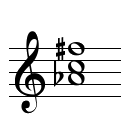Figure 8.8
The Italian ⁺⁶ chord for the key of C major -
122
The augmented sixth chords all want to move to dominant harmonies – either directly to the dominant chord or to the second inversion of the tonic chord, which is itself an introduction to the dominant chord. The Ger. ⁺⁶ prefers to go straight to V, the
doubly-aug. ⁺⁶ needs a I 6/4 , and the other two can resolve to either V or I 6/4.Movie 8.10 The augmented sixth chords
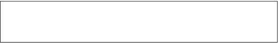Suggested Practica Musica Musica Activities 8.2
• Spelling Aug 6 Chords: Practice building various augmented sixth chords.

-
123
Ninth Chords And Beyond
If you continue to stack thirds on the basic triad you can produce chords that include ninths, elevenths, or even thirteenths. These sonorities are not really acknowledged as such in traditional music theory, though they are essential to jazz. One reason traditional tonal theory does not explain chords above the seventh is that it has other ways to refer to the same effects. A ninth or an eleventh, for example, may appear in a work by Mozart, but the composer did not consider it to be part of a chord – it was a dissonant tone (this is the same way the “seventh chord” came into being, as a dissonance added to a triad).
The main difference between the historical and contemporary use of such chords is that they are now often treated as sounds to be heard for their own sake rather than as dissonant preparations for consonant chords. So a jazz player, or a modern symphonist, does not necessarily resolve the seventh or the other dissonances as a musician from an earlier era would have done. On the other hand, jazz musicians are still likely to follow traditional principles of voice-leading in other respects – keeping economy of motion, for example.
The only simple guidelines that can be provided here for the use of chords beyond the seventh are these: they are usually played in root position, and if any notes must be left out you should at least include the root, the third, and the seventh (though a jazz pianist may want to leave the root for the
bass player). That is really just the same as traditional practice, where the fifth is the most dispensable note in a chord. For example, a thirteenth chord could be reduced to four parts as shown in Movie 8.11.
Non-Tertian Chords
In the modern era, composers have constructed
non-tertian chords Non-Tertian Chords Chords built from intervals other than the third. The most common of these non-tertian chords are the quartal and quintal chords (chords built from stacked fourths or fifths). – chords built from intervals other
than the third – based on the fifth, the fourth, or even the second. These are not part of the language of common practice period music, and generally could be said to have a coloristic rather than a harmonic function. The most popular non-tertian harmonies are chords built of fourths and fifths, which are known respectively as quartal and quintal chords.Movie 8.11 Thirteenth chord reduced to four voices
-
124
It is not always easy to avoid the tertian sound: chords built of fifths may tend to
sound like tertian harmonies with every other note missing. A quartal chord with
only three notes may give the impression of being really a seventh chord with a
fourth substituted for its third (what a jazz player would call a suspended fourth
chord, a “7 sus 4,”). To be perceived as non-tertian, such harmonies probably need
to be placed in a context where the listener doesn’t expect tertian chords.Movie 8.12 Non-tertian chords
Movie 8.13 Quartal harmonies in Hindemith’s Sonata for Flute and Piano, 2nd movement
The below example from Hindemith is a good example of harmony clearly intended to emphasize fourths, yet triadic harmony is never far away:
-
125
Review 8.2
1. The Neopolitan chord is a major triad whose root is the lowered second degree of the scale. It’s usually found in first inversion (N6), usually in minor keys, and typically moves to the dominant chord.
2. The augmented sixth chords are built around the interval of an augmented sixth on the lowered sixth degree of the scale. The notes of the augmented sixth expand outward to resolve to the dominant in the following chord or to a substitute for the dominant, such as the second inversion of the tonic triad.
3. There are four types of augmented sixth chords:
the Italian, German, French and the doubly-augmented. Adding the tonic to the augmented sixth interval forms the Italian ⁺⁶. To these three tones, a fourth tone is added to form the other augmented sixth chords: a major second above the tonic (French), a minor third above the tonic (German), a minor second above the tonic (doubly augmented).4. Triadic harmonies can also be formed that include 9ths, 11ths, or 13ths. These are used in jazz, but
they are not an explicit part of traditional theory. Some notes can be left out of these chords: the most important ones to keep are the root, third, seventh, and the higher degree.5. Chords can also be built from intervals other than
the third, though such harmonies are not part of
the language of traditional tonal music. The most common of these non-tertian chords are the quartal and quintal chords (chords built from stacked
fourths or fifths).